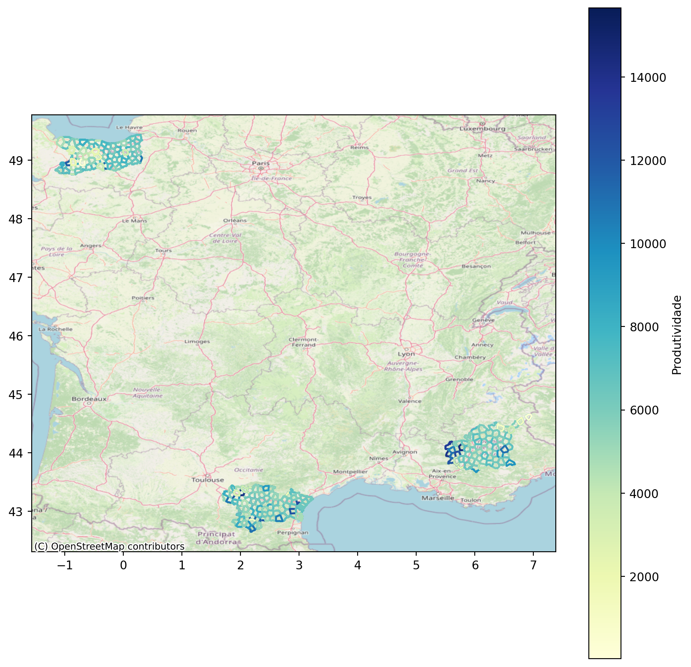
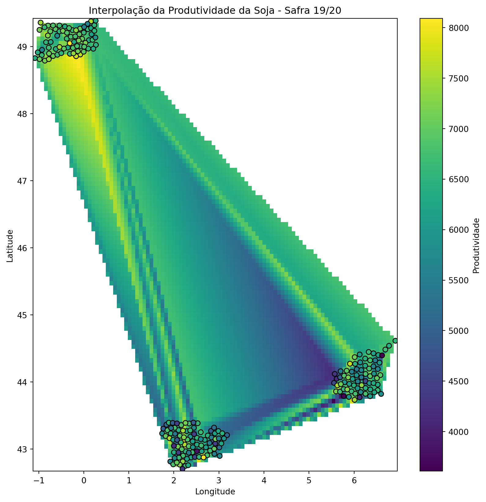
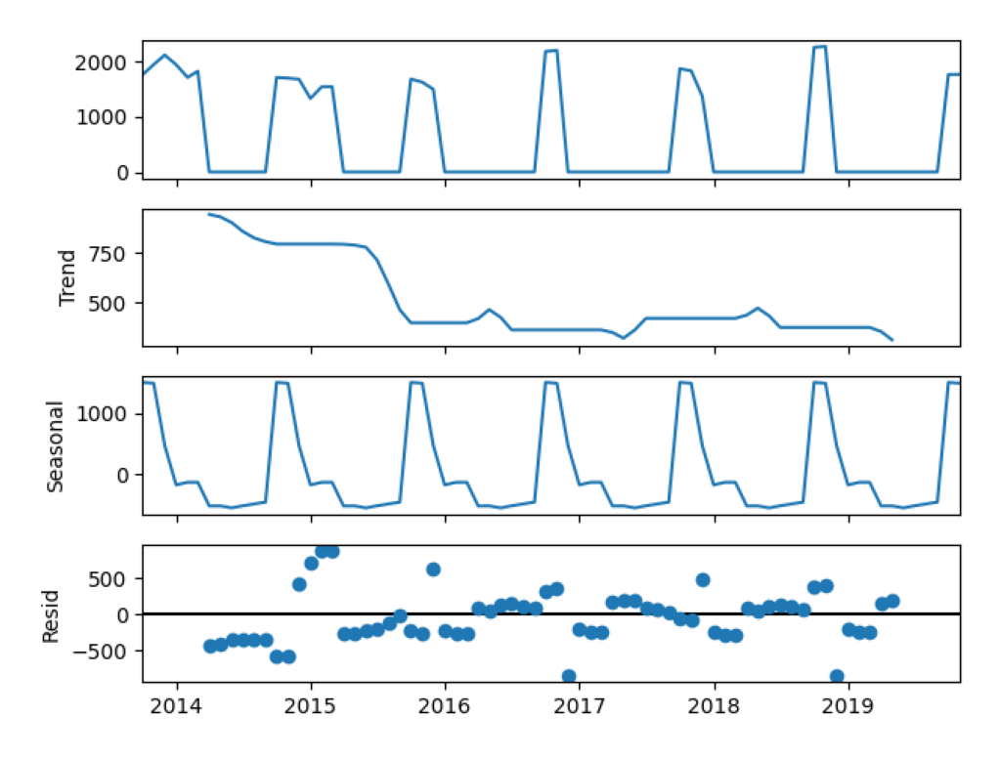
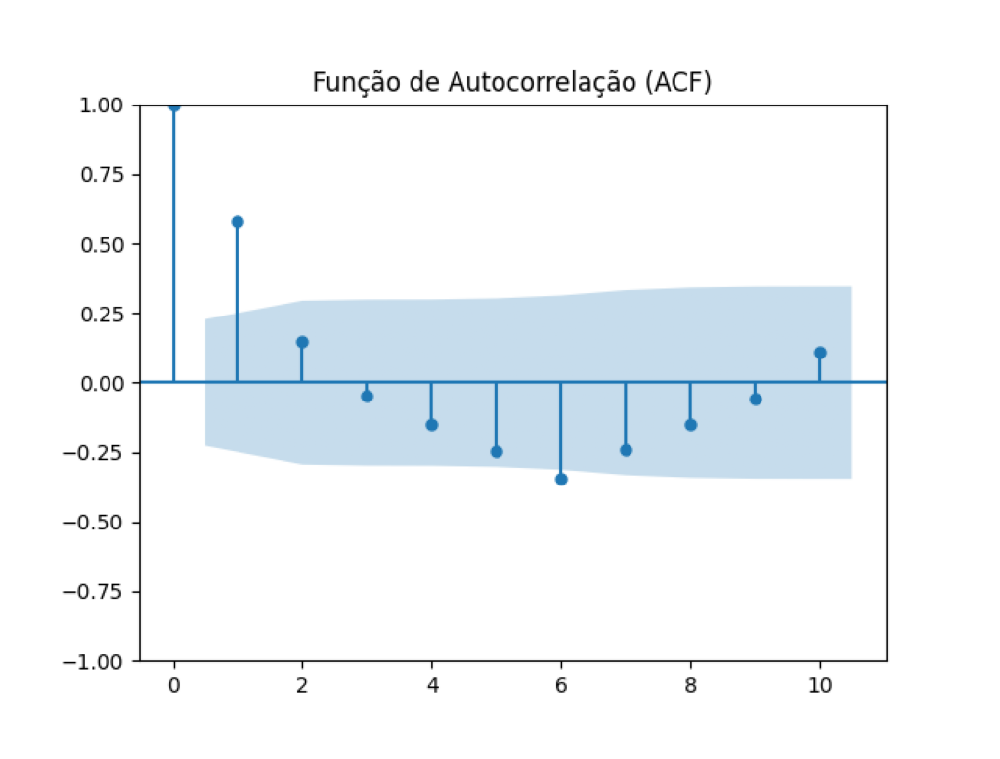
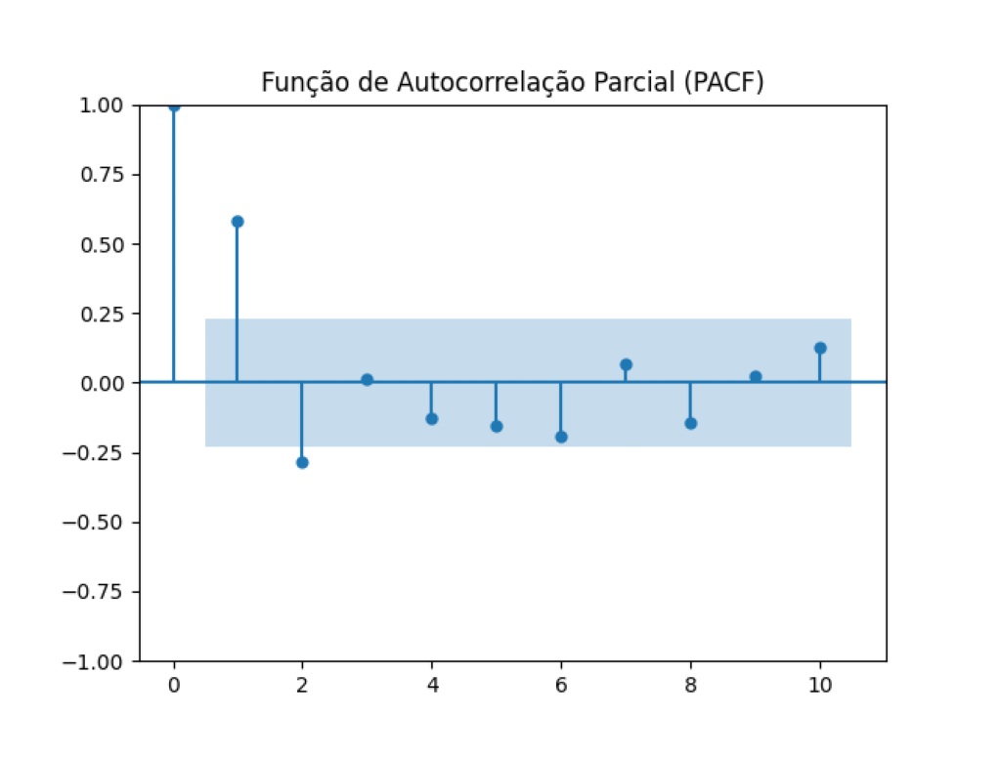

Code
import os
os.chdir('..')import os
os.chdir('..')import warnings
warnings.filterwarnings("ignore")
import pandas as pd
import numpy as np
import geopandas as gpd
import plotly.graph_objects as go
import plotly.express as px
import matplotlib.pyplot as plt
import matplotlib.image as mpimg
from sklearn.cluster import DBSCAN
from sklearn.preprocessing import StandardScaler
import contextily as ctx
from pykrige.ok import OrdinaryKriging
from statsmodels.tsa.seasonal import seasonal_decompose
from statsmodels.tsa.stattools import adfuller
from statsmodels.graphics.tsaplots import plot_acf, plot_pacf
from scipy.interpolate import griddata
from src.utils.evaluation.statistical_tests import kruskal_nemenyi
from src.utils.features.auxiliary_functions import std_medians, obter_estacaoA primeira etapa envolveu a obtenção dos arquivos que compõem o shapefile, disponibilizados no s3. Esses arquivos foram salvos em data/raw, e o código completo que lê e salva esses arquivos está disponível em obtain_s3_files.py.
# Caminho para os arquivos do shapefile
shp_file = 'data/raw/tabela_geometria.shp'
tabela_geometria = gpd.read_file(shp_file)
tabela_geometria.head()| fznd_nm | setr_nm | cdg_tlh | geometry | |
|---|---|---|---|---|
| 0 | Boa Vista | Anastacia | 10 | POLYGON ((7.06816 48.88857, 7.05142 48.86768, ... |
| 1 | Boa Vista | Paranatinga | 11 | POLYGON ((7.18567 48.37687, 7.17542 48.34063, ... |
| 2 | Boa Vista | Anastacia | 12 | POLYGON ((7.05911 48.95928, 7.03710 48.97474, ... |
| 3 | Boa Vista | Anastacia | 13 | POLYGON ((7.14822 49.00547, 7.16039 49.00555, ... |
| 4 | Boa Vista | Anastacia | 14 | POLYGON ((7.15080 48.88407, 7.06816 48.88857, ... |
Ainda nesta esta, os dados da tabela denominada ‘talhao’ foram salvos no formato parquet para economia de espaço em disco e por ser mais otimizado para processamento. Esta tabela continha mais informações relacionadas às safras em comparação com as demais disponibilizadas através do Postgres. O código completo que lê e salva este arquivo está disponível em obtain_talhao_data.py.
talhao_file = 'data/raw/talhao.parquet'
talhao = pd.read_parquet(talhao_file)
talhao.head()| id_talhao | fazenda_nome | setor_nome | codigo_talhao | textura_solo_descricao | hectares | safra | safra_data_inicio | safra_data_fim | safra_periodo | ... | data_colheita_inicio | data_colheita_fim | area_colhida | peso_colhido | produtividade | estande_planta | ultimo_estadio_fenologico | base_metereo_codigo | base_metereo_altitude | periodo_safra_classe | |
|---|---|---|---|---|---|---|---|---|---|---|---|---|---|---|---|---|---|---|---|---|---|
| 0 | 30598 | F6 | 79 | 251 | Media 15%-35% | 0.0 | Safra 18/19 | 2018-01-01 | 2020-01-31 | 218 | ... | None | None | 0.0 | 0.0 | None | 0.00 | None | 34 | 673 | Safrinha |
| 1 | 19661 | F6 | 79 | 251 | Media 15%-35% | 28.004126 | Safra 15/16 | 2015-01-01 | 2017-05-01 | 56 | ... | 2016-07-23 | 2016-07-23 | 27.75 | 215720.5 | 7773.711711711711 | 2.60 | V9 | 34 | 673 | Safrinha |
| 2 | 28049 | F6 | 79 | 251 | Media 15%-35% | 28.004126 | Safra 18/19 | 2018-01-01 | 2020-01-31 | 158 | ... | None | None | None | None | None | 0.00 | None | 34 | 673 | Outros |
| 3 | 23704 | F6 | 79 | 251 | Media 15%-35% | 28.004126 | Safra 16/17 | 2016-01-01 | 2017-12-31 | 140 | ... | 2017-08-05 | 2017-08-05 | 27.75 | 167807.5 | 6047.117117117117 | 3.80 | V18 | 34 | 673 | Safrinha |
| 4 | 2339 | F6 | 79 | 251 | Media 15%-35% | 28.004126 | Safra 13/14 | 2013-01-01 | 2015-05-31 | 31 | ... | 2014-03-22 | 2014-04-01 | 27.75 | 57200.5 | 2061.2792792792793 | 0.00 | R4 | 34 | 673 | Safra |
5 rows × 29 columns
count_crop = talhao['ocupacao'].value_counts()
fig = px.bar(count_crop, x=count_crop.index, y=count_crop.values,
color=count_crop.index, text=count_crop.values,
labels={'ocupacao': 'CULTURA', 'y': 'Total'},
template='seaborn',
title='<b> Número de vezes em que cada cultura foi cultivada')
fig.update_traces(showlegend=False)
fig.update_yaxes(tickformat="000")
fig.show()Como a soja foi significativamente mais cultivada quando comparada às demais culturas, todo o trabalho foi desenvolvido considerando exclusivamente a soja.
No script combine_all_data.py é criado um único dataframe que integra as informações da tabela de meteorologia, os dados espaciais dos talhões e os dados presentes na tabela ‘talhao’, mensionada anteriormente. Estes dados foram salvos como shapefiles.
shp_file = 'data/interim/talhao_with_geo_info.shp'
talhao_spatial_data = gpd.read_file(shp_file)
talhao_spatial_data.head()| fznd_nm | setr_nm | cdg_tlh | id_talhao | setor_nome | textura_so | hectares | safra | safra_data | safra_da_1 | ... | produtivid | estande_pl | ultimo_est | base_meter | base_met_1 | periodo_sa | leitura_va | periodo_pl | periodo__1 | geometry | |
|---|---|---|---|---|---|---|---|---|---|---|---|---|---|---|---|---|---|---|---|---|---|
| 0 | F6 | None | 251 | 30598 | 79 | Media 15%-35% | 0.0 | Safra 18/19 | 2018-01-01 | 2020-01-31 | ... | None | 0.00 | None | 34 | 673 | Safrinha | NaN | None | None | None |
| 1 | F6 | None | 251 | 19661 | 79 | Media 15%-35% | 28.004126 | Safra 15/16 | 2015-01-01 | 2017-05-01 | ... | 7773.711711711711 | 2.60 | V9 | 34 | 673 | Safrinha | NaN | None | None | None |
| 2 | F6 | None | 251 | 28049 | 79 | Media 15%-35% | 28.004126 | Safra 18/19 | 2018-01-01 | 2020-01-31 | ... | None | 0.00 | None | 34 | 673 | Outros | NaN | None | None | None |
| 3 | F6 | None | 251 | 23704 | 79 | Media 15%-35% | 28.004126 | Safra 16/17 | 2016-01-01 | 2017-12-31 | ... | 6047.117117117117 | 3.80 | V18 | 34 | 673 | Safrinha | NaN | None | None | None |
| 4 | F6 | None | 251 | 2339 | 79 | Media 15%-35% | 28.004126 | Safra 13/14 | 2013-01-01 | 2015-05-31 | ... | 2061.2792792792793 | 0.00 | R4 | 34 | 673 | Safra | 2559.0 | 2013-09-01 | 2014-08-31 | None |
5 rows × 34 columns
Hipótese de trabalho: A produtividade das safras será influenciada por uma combinação de fatores, incluindo a textura do solo, as condições meteorológicas, localização do talhão, entre outros.
O objetivo da pesquisa é identificar os principais fatores que impactam a produtividade das safras em diferentes fazendas, e gerar insights que possam ser utilizados para otimizar a gestão agrícola e melhorar a eficiência produtiva.
talhao_meteorologia_data = pd.read_parquet(
'data/interim/talhao_meteorologia_data.parquet')
talhao_meteorologia_data = talhao_meteorologia_data.replace([np.inf, -np.inf],
np.nan)
talhao_meteorologia_data = talhao_meteorologia_data.apply(
lambda x: pd.to_numeric(x, errors='ignore'))
grouped_data = talhao_meteorologia_data.groupby('textura_solo_descricao')[
'produtividade'].agg(['count', lambda x: np.mean(x[
np.isfinite(x)])]).reset_index()
grouped_data.columns = ['textura_solo_descricao', 'count', 'mean']
mean_productivity = grouped_data.sort_values(by='mean',
ascending=False)
mean_productivity['mean'] = round(mean_productivity[
'mean'], 2)
fig = px.bar(mean_productivity, x='textura_solo_descricao', y='mean',
color='textura_solo_descricao',
labels={'textura_solo_descricao': 'TEXTURA SOLO',
'mean': 'PROD. MÉDIA'},
text='count',
template='seaborn',
title='<b> Prod. Média por textura do solo')
fig.update_yaxes(tickformat="000")
fig.update_traces(textfont_size=8, showlegend=False)
fig.show()A primeira análise visa entender se a textura do solo é um fator que influencia na produtividade. Para as variedades de soja em geral, a textura média 15%-35% se mostrou mais favorável (em média) à produtividade. Os números vistos no interior das barras mostram o tamanho da amostra para aquela caegoria em específico. Através dele, é possível notar que o solo argiloso 35%-60% foi o mais frequente no período.
talhao_meteorologia_data = talhao_meteorologia_data.dropna(
subset=['produtividade', 'textura_solo_descricao'])
talhao_meteorologia_data = talhao_meteorologia_data[np.isfinite(
talhao_meteorologia_data['produtividade'])]
kruskal_nemenyi(data=talhao_meteorologia_data,
col_cat='textura_solo_descricao',
col_num='produtividade')
talhao_meteorologia_data.groupby('textura_solo_descricao')[
'produtividade'].describe()Estatística de Kruskal-Wallis: 1562.31
P-valor (Kruskal-Wallis): 0.0
Diferenças absolutas entre valores médios:
Arenosa 0%-15% Argilosa 35%-60% Media 15%-35% \
Arenosa 0%-15% 0.0 2001.3* 22136.7*
Argilosa 35%-60% 2001.3* 0.0 20135.4*
Media 15%-35% 22136.7* 20135.4* 0.0
Muito Argilosa 60%-100% 2291.3* 290.0* 19845.4*
Muito Argilosa 60%-100%
Arenosa 0%-15% 2291.3*
Argilosa 35%-60% 290.0*
Media 15%-35% 19845.4*
Muito Argilosa 60%-100% 0.0
* = Diferenças estatisticamente significativas| count | mean | std | min | 25% | 50% | 75% | max | |
|---|---|---|---|---|---|---|---|---|
| textura_solo_descricao | ||||||||
| Arenosa 0%-15% | 1764.0 | 4983.313364 | 2223.713072 | 25.833333 | 3621.893892 | 4853.234554 | 5980.449953 | 1.794733e+04 |
| Argilosa 35%-60% | 6157.0 | 6984.621627 | 3022.124366 | 52.351190 | 5642.516667 | 6607.424748 | 7817.316667 | 1.142690e+05 |
| Media 15%-35% | 4156.0 | 27119.950735 | 715945.275537 | 72.069597 | 4695.279403 | 5749.827705 | 6838.532877 | 2.659883e+07 |
| Muito Argilosa 60%-100% | 2066.0 | 7274.563104 | 3676.886860 | 252.150538 | 5829.779758 | 6791.056461 | 7993.011388 | 6.645402e+04 |
Avaliando os p-valores das comparações duas a duas, nota-se que o teste revelou haver diferença significativa (valor-p < 0.050)entre as produtividades de todos os solos. O resultado acima pode ser interpretado da seguinte forma: os valores represenam a diferença das médias, em valor absoluto, das produtividades dos solos. O ’*’ indica que a hipótese nula do teste (de que não existe diferença entre as produtividades dos diferentes solos) foi rejeitada.
Considerando as variedades mais comuns
Acima analisamos as variedades de soja como um todo, mas agora vamos ver se isolando as variedades (as 3 mais frequentes), o comportamento se repete.
talhao_meteorologia_data['variedade'] = talhao_meteorologia_data[
'variedade'].astype(str)
rank_variety = talhao_meteorologia_data[
'variedade'].value_counts().sort_values(ascending=False)
top_variety = rank_variety.head(3)
talhao_meteorologia_data_variety_1 = talhao_meteorologia_data[
(talhao_meteorologia_data['variedade'] == top_variety.index[0])]
grouped_data = talhao_meteorologia_data_variety_1.groupby(
'textura_solo_descricao')['produtividade'].agg([
'mean', 'count']).reset_index()
grouped_data.columns = ['textura_solo_descricao', 'produtividade', 'count']
mean_productivity = grouped_data.sort_values(by='produtividade',
ascending=False)
mean_productivity['produtividade'] = round(mean_productivity[
'produtividade'], 2)
fig = px.bar(mean_productivity, x='textura_solo_descricao', y='produtividade',
color='textura_solo_descricao',
labels={'textura_solo_descricao': 'TEXTURA SOLO',
'produtividade': 'PROD. MÉDIA'},
text='count',
template='seaborn',
title='<b> Prod. Média por textura do solo - variedade ' +
top_variety.index[0])
fig.update_yaxes(tickformat="000")
fig.update_traces(textfont_size=8)
fig.show()talhao_meteorologia_data_variety_2 = talhao_meteorologia_data[
(talhao_meteorologia_data['variedade'] == top_variety.index[1])]
grouped_data = talhao_meteorologia_data_variety_2.groupby(
'textura_solo_descricao')['produtividade'].agg([
'mean', 'count']).reset_index()
grouped_data.columns = ['textura_solo_descricao', 'produtividade', 'count']
mean_productivity = grouped_data.sort_values(by='produtividade',
ascending=False)
mean_productivity['produtividade'] = round(mean_productivity[
'produtividade'], 2)
fig = px.bar(mean_productivity, x='textura_solo_descricao', y='produtividade',
color='textura_solo_descricao',
labels={'textura_solo_descricao': 'TEXTURA SOLO',
'produtividade': 'PROD. MÉDIA'},
text='count',
template='seaborn',
title='<b> Prod. Média por textura do solo - variedade ' +
top_variety.index[1])
fig.update_yaxes(tickformat="000")
fig.update_traces(textfont_size=8)
fig.show()talhao_meteorologia_data_variety_3 = talhao_meteorologia_data[
(talhao_meteorologia_data['variedade'] == top_variety.index[2])]
grouped_data = talhao_meteorologia_data_variety_3.groupby(
'textura_solo_descricao')['produtividade'].agg([
'mean', 'count']).reset_index()
grouped_data.columns = ['textura_solo_descricao', 'produtividade', 'count']
mean_productivity = grouped_data.sort_values(by='produtividade',
ascending=False)
mean_productivity['produtividade'] = round(mean_productivity[
'produtividade'], 2)
fig = px.bar(mean_productivity, x='textura_solo_descricao', y='produtividade',
color='textura_solo_descricao',
labels={'textura_solo_descricao': 'TEXTURA SOLO',
'produtividade': 'PROD. MÉDIA'},
text='count',
template='seaborn',
title='<b> Prod. Média por textura do solo - variedade ' +
top_variety.index[2])
fig.update_yaxes(tickformat="000")
fig.update_traces(textfont_size=8)
fig.show()Ao isolarmos as 3 variedades mais frequentes nos dados, vemos que o padrão visto anteriormente se alterou: a textura do solo média 15%-35 não se manteve associada a uma maior produtividade. Desta forma, levar em conta a variedade da soja se mostra relevante.
talhao_meteorologia_data['data_plantio_inicio'] = pd.to_datetime(talhao_meteorologia_data['data_plantio_inicio'], format='%Y-%m-%d')
talhao_meteorologia_data['estacao_plantio'] = talhao_meteorologia_data[
'data_plantio_inicio'].apply(obter_estacao)
count_season = talhao_meteorologia_data['estacao_plantio'].value_counts()
porc_season = talhao_meteorologia_data['estacao_plantio'].value_counts(
normalize=True).mul(100).round(2)
pd.concat([count_season, porc_season], axis=1, keys=['Freq', '%'])| Freq | % | |
|---|---|---|
| estacao_plantio | ||
| Primavera | 7439 | 53.43 |
| Verão | 5698 | 40.93 |
| Outono | 408 | 2.93 |
| Inverno | 377 | 2.71 |
A partir da tabela criada, podemos ver que a maior parte dos plantios foram realizados na Primavera, totalizando cerca de 53% de todos os plantios de soja.
grouped_data = talhao_meteorologia_data.groupby('estacao_plantio')[
'produtividade'].agg(['mean', 'count']).reset_index()
grouped_data.columns = ['estacao_plantio', 'produtividade', 'count']
mean_productivity = grouped_data.sort_values(by='produtividade',
ascending=False)
mean_productivity['produtividade'] = round(mean_productivity[
'produtividade'], 2)
fig = px.bar(mean_productivity, x='estacao_plantio', y='produtividade',
color='estacao_plantio',
labels={'estacao_plantio': 'ESTAÇÃO PLANTIO',
'produtividade': 'PROD. MÉDIA'},
text='count',
template='seaborn',
title='<b> Prod. Média por estação de plantio')
fig.update_yaxes(tickformat="000")
fig.update_traces(textfont_size=8)
fig.show()Em média, plantar as variedades de soja no verão leva a uma maior produtividade.
talhao_meteorologia_data = talhao_meteorologia_data.dropna(
subset='estacao_plantio')
kruskal_nemenyi(data=talhao_meteorologia_data,
col_cat='estacao_plantio',
col_num='produtividade')
talhao_meteorologia_data.groupby('estacao_plantio')[
'produtividade'].describe()Estatística de Kruskal-Wallis: 3249.48
P-valor (Kruskal-Wallis): 0.0
Diferenças absolutas entre valores médios:
Inverno Outono Primavera Verão
Inverno 0.0 2570.0* 261.2* 1955.0*
Outono 2570.0* 0.0 2308.8* 4525.0*
Primavera 261.2* 2308.8* 0.0 2216.2*
Verão 1955.0* 4525.0* 2216.2* 0.0
* = Diferenças estatisticamente significativas| count | mean | std | min | 25% | 50% | 75% | max | |
|---|---|---|---|---|---|---|---|---|
| estacao_plantio | ||||||||
| Inverno | 377.0 | 5906.406528 | 1023.656263 | 608.063631 | 5371.336805 | 6097.595238 | 6603.072917 | 7845.116732 |
| Outono | 408.0 | 3336.447627 | 3807.573020 | 52.351190 | 1068.717840 | 2409.048641 | 3762.593864 | 38030.555556 |
| Primavera | 7439.0 | 5645.183785 | 1944.028036 | 129.304304 | 4893.568083 | 5776.986594 | 6470.025922 | 114269.005848 |
| Verão | 5698.0 | 7861.420683 | 3517.593439 | 25.833333 | 6130.093137 | 7762.548995 | 9811.199526 | 78016.666667 |
Avaliando os p-valores das comparações duas a duas, nota-se que o teste revelou haver diferença significativa (valor-p < 0.050)entre as produtividades, a depender da estação em que o plantio foi feito.
Considerando as variedades mais comuns
talhao_meteorologia_data_variety_1 = talhao_meteorologia_data[(talhao_meteorologia_data[
'variedade'] == top_variety.index[0])]
grouped_data = talhao_meteorologia_data_variety_1.groupby(
'estacao_plantio')['produtividade'].agg([
'mean', 'count']).reset_index()
grouped_data.columns = ['estacao_plantio', 'produtividade', 'count']
mean_productivity = grouped_data.sort_values(by='produtividade',
ascending=False)
mean_productivity['produtividade'] = round(mean_productivity[
'produtividade'], 2)
fig = px.bar(mean_productivity, x='estacao_plantio', y='produtividade',
color='estacao_plantio',
labels={'estacao_plantio': 'ESTAÇÃO PLANTIO',
'produtividade': 'PROD. MÉDIA'},
text='count',
template='seaborn',
title='<b> Prod. Média por estação de plantio - variedade ' +
top_variety.index[0])
fig.update_yaxes(tickformat="000")
fig.update_traces(textfont_size=8)
fig.show()talhao_meteorologia_data_variety_2 = talhao_meteorologia_data[(talhao_meteorologia_data[
'variedade'] == top_variety.index[1])]
grouped_data = talhao_meteorologia_data_variety_2.groupby(
'estacao_plantio')['produtividade'].agg([
'mean', 'count']).reset_index()
grouped_data.columns = ['estacao_plantio', 'produtividade', 'count']
mean_productivity = grouped_data.sort_values(by='produtividade',
ascending=False)
mean_productivity['produtividade'] = round(mean_productivity[
'produtividade'], 2)
fig = px.bar(mean_productivity, x='estacao_plantio', y='produtividade',
color='estacao_plantio',
labels={'estacao_plantio': 'ESTAÇÃO PLANTIO',
'produtividade': 'PROD. MÉDIA'},
text='count',
template='seaborn',
title='<b> Prod. Média por estação de plantio - variedade ' +
top_variety.index[1])
fig.update_yaxes(tickformat="000")
fig.update_traces(textfont_size=8)
fig.show()talhao_meteorologia_data_variety_3 = talhao_meteorologia_data[(talhao_meteorologia_data[
'variedade'] == top_variety.index[2])]
grouped_data = talhao_meteorologia_data_variety_3.groupby(
'estacao_plantio')['produtividade'].agg([
'mean', 'count']).reset_index()
grouped_data.columns = ['estacao_plantio', 'produtividade', 'count']
mean_productivity = grouped_data.sort_values(by='produtividade',
ascending=False)
mean_productivity['produtividade'] = round(mean_productivity[
'produtividade'], 2)
fig = px.bar(mean_productivity, x='estacao_plantio', y='produtividade',
color='estacao_plantio',
labels={'estacao_plantio': 'ESTAÇÃO DE PLANTIO',
'produtividade': 'PROD. MÉDIA'},
text='count',
template='seaborn',
title='<b> Prod. Média por estação de plantio - variedade ' +
top_variety.index[2])
fig.update_yaxes(tickformat="000")
fig.update_traces(textfont_size=8)
fig.show()Nota-se um padrão diferente nas variedades mais frequentes, quanto a produtividade associada à estação de plantio, à exceção da variedade 980. Novamente, mostra-se relevante levar em conta as especificidades de cada variedade.
talhao_meteorologia_data['data_colheita_inicio'] = pd.to_datetime(
talhao_meteorologia_data['data_colheita_inicio'], format='%Y-%m-%d')
talhao_meteorologia_data['estacao_colheita'] = talhao_meteorologia_data[
'data_colheita_inicio'].apply(obter_estacao)
count_season = talhao_meteorologia_data['estacao_colheita'].value_counts()
porc_season = talhao_meteorologia_data['estacao_colheita'].value_counts(
normalize=True).mul(100).round(2)
pd.concat([count_season, porc_season], axis=1, keys=['Freq', '%'])| Freq | % | |
|---|---|---|
| estacao_colheita | ||
| Verão | 6339 | 47.45 |
| Inverno | 4964 | 37.16 |
| Outono | 2050 | 15.35 |
| Primavera | 5 | 0.04 |
A partir da tabela criada, podemos ver que a maior parte das colheitas são realizados no Verão, totalizando cerca de 47%.
grouped_data = talhao_meteorologia_data.groupby('estacao_colheita')[
'produtividade'].agg(['mean', 'count']).reset_index()
grouped_data.columns = ['estacao_colheita', 'produtividade', 'count']
mean_productivity = grouped_data.sort_values(by='produtividade',
ascending=False)
mean_productivity['produtividade'] = round(mean_productivity[
'produtividade'], 2)
fig = px.bar(mean_productivity, x='estacao_colheita', y='produtividade',
color='estacao_colheita',
labels={'estacao_colheita': 'ESTAÇÃO COLHEITA',
'produtividade': 'PROD. MÉDIA'},
text='count',
template='seaborn',
title='<b> Prod. Média por estação de colheita')
fig.update_yaxes(tickformat="000")
fig.update_traces(textfont_size=8)
fig.show()Colher no inverno trouxe uma produtividade média superior a colher nas demais estações. Quase não houveram colheitas na primavera.
talhao_meteorologia_data = talhao_meteorologia_data.dropna(
subset='estacao_colheita')
kruskal_nemenyi(data=talhao_meteorologia_data,
col_cat='estacao_colheita',
col_num='produtividade')
talhao_meteorologia_data.groupby('estacao_colheita')[
'produtividade'].describe()Estatística de Kruskal-Wallis: 1868.19
P-valor (Kruskal-Wallis): 0.0
Diferenças absolutas entre valores médios:
Inverno Outono Primavera Verão
Inverno 0.0 1791.2* 2385.3 1776.8*
Outono 1791.2* 0.0 594.1 14.4*
Primavera 2385.3 594.1 0.0 608.5
Verão 1776.8* 14.4* 608.5 0.0
* = Diferenças estatisticamente significativas| count | mean | std | min | 25% | 50% | 75% | max | |
|---|---|---|---|---|---|---|---|---|
| estacao_colheita | ||||||||
| Inverno | 4964.0 | 7585.127379 | 3660.552526 | 25.833333 | 5789.009661 | 7679.510626 | 9769.786162 | 78016.666667 |
| Outono | 2050.0 | 5793.925851 | 3286.346618 | 65.611814 | 4065.876192 | 5131.272150 | 6335.389654 | 52070.808283 |
| Primavera | 5.0 | 5199.807432 | 2511.939558 | 873.104575 | 5330.628272 | 6011.209565 | 6651.045093 | 7133.049655 |
| Verão | 6339.0 | 5808.273482 | 1925.047235 | 129.304304 | 5156.308185 | 5937.271869 | 6564.519423 | 114269.005848 |
Avaliando os p-valores das comparações duas a duas, nota-se que o teste revelou haver diferença significativa (valor-p < 0.050)entre as produtividades nas diferentes estações de colheita, à exceção da primavera (pouquíssimo frequente).
Considerando as variedades mais comuns
talhao_meteorologia_data_variety_1 = talhao_meteorologia_data[
(talhao_meteorologia_data['variedade'] == top_variety.index[0])]
grouped_data = talhao_meteorologia_data_variety_1.groupby(
'estacao_colheita')['produtividade'].agg([
'mean', 'count']).reset_index()
grouped_data.columns = ['estacao_colheita', 'produtividade', 'count']
mean_productivity = grouped_data.sort_values(by='produtividade',
ascending=False)
mean_productivity['produtividade'] = round(mean_productivity[
'produtividade'], 2)
fig = px.bar(mean_productivity, x='estacao_colheita', y='produtividade',
color='estacao_colheita',
labels={'estacao_colheita': 'ESTAÇÃO COLHEITA',
'produtividade': 'PROD. MÉDIA'},
text='count',
template='seaborn',
title='<b> Prod. Média por estação de colheita - variedade ' +
top_variety.index[0])
fig.update_yaxes(tickformat="000")
fig.update_traces(textfont_size=8)
fig.show()talhao_meteorologia_data_variety_2 = talhao_meteorologia_data[
(talhao_meteorologia_data['variedade'] == top_variety.index[1])]
grouped_data = talhao_meteorologia_data_variety_2.groupby(
'estacao_colheita')['produtividade'].agg([
'mean', 'count']).reset_index()
grouped_data.columns = ['estacao_colheita', 'produtividade', 'count']
mean_productivity = grouped_data.sort_values(by='produtividade',
ascending=False)
mean_productivity['produtividade'] = round(mean_productivity[
'produtividade'], 2)
fig = px.bar(mean_productivity, x='estacao_colheita', y='produtividade',
color='estacao_colheita',
labels={'estacao_colheita': 'ESTAÇÃO COLHEITA',
'produtividade': 'PROD. MÉDIA'},
text='count',
template='seaborn',
title='<b> Prod. Média por estação de colheita - variedade ' +
top_variety.index[1])
fig.update_yaxes(tickformat="000")
fig.update_traces(textfont_size=8)
fig.show()talhao_meteorologia_data_variety_3 = talhao_meteorologia_data[
(talhao_meteorologia_data['variedade'] == top_variety.index[2])]
grouped_data = talhao_meteorologia_data_variety_3.groupby(
'estacao_colheita')['produtividade'].agg([
'mean', 'count']).reset_index()
grouped_data.columns = ['estacao_colheita', 'produtividade', 'count']
mean_productivity = grouped_data.sort_values(by='produtividade',
ascending=False)
mean_productivity['produtividade'] = round(mean_productivity[
'produtividade'], 2)
fig = px.bar(mean_productivity, x='estacao_colheita', y='produtividade',
color='estacao_colheita',
labels={'estacao_colheita': 'ESTAÇÃO DE COLHEITA',
'produtividade': 'PROD. MÉDIA'},
text='count',
template='seaborn',
title='<b> Prod. Média por estação de colheita - variedade ' +
top_variety.index[2])
fig.update_yaxes(tickformat="000")
fig.update_traces(textfont_size=8)
fig.show()Padrões diferentes são observados quando isolamos as variedades, embora a variedade 980 tenha apresentado padrão similar ao visto nos dados em geral.
Outro provável fator que pode afetar a produtividade é a localização do talhão em que ela foi plantada. Na análise abaixo, os talhões foram agrupados em clusters, e suas produtividades médias (clusters) foram avaliadas.
talhao_spatial_data = talhao_spatial_data.dropna(subset='geometry')
talhao_spatial_data = talhao_spatial_data.replace([np.inf, -np.inf],
np.nan)
talhao_spatial_data = talhao_spatial_data.apply(
lambda x: pd.to_numeric(x, errors='ignore'))
talhao_spatial_data = talhao_spatial_data.dropna(subset='produtivid')
talhao_spatial_data = talhao_spatial_data[np.isfinite(
talhao_spatial_data['produtivid'])]
talhao_spatial_data['centroid'] = talhao_spatial_data['geometry'].centroid
# Coordenadas dos pontos centroides
talhao_spatial_data['x'] = talhao_spatial_data['centroid'].x
talhao_spatial_data['y'] = talhao_spatial_data['centroid'].y
X = talhao_spatial_data[['x', 'y']]
scaler = StandardScaler()
X_scaled = scaler.fit_transform(X)
dbscan = DBSCAN(eps=0.1, min_samples=2)
talhao_spatial_data['cluster'] = dbscan.fit_predict(X_scaled)
talhao_spatial_data.head()| fznd_nm | setr_nm | cdg_tlh | id_talhao | setor_nome | textura_so | hectares | safra | safra_data | safra_da_1 | ... | base_met_1 | periodo_sa | leitura_va | periodo_pl | periodo__1 | geometry | centroid | x | y | cluster | |
|---|---|---|---|---|---|---|---|---|---|---|---|---|---|---|---|---|---|---|---|---|---|
| 5139 | F6 | Terra Nova | 61 | 9165 | 51 | Arenosa 0%-15% | 19.505030 | Safra 13/14 | 2013-01-01 | 2015-05-31 | ... | 664.0 | Safra | 2092.0 | 2013-09-01 | 2014-08-31 | LINESTRING (2.45457 42.98307, 2.46288 42.93397... | POINT (2.41237 42.95262) | 2.41237 | 42.952618 | 0 |
| 5140 | F6 | Terra Nova | 61 | 15577 | 51 | Arenosa 0%-15% | 28.353334 | Safra 14/15 | 2014-01-01 | 2015-12-31 | ... | 664.0 | Safrinha | NaN | None | None | LINESTRING (2.45457 42.98307, 2.46288 42.93397... | POINT (2.41237 42.95262) | 2.41237 | 42.952618 | 0 |
| 5144 | F6 | Terra Nova | 61 | 33054 | 51 | Arenosa 0%-15% | 29.543585 | Safra 19/20 | 2018-12-31 | 2020-12-30 | ... | 664.0 | Safra | 1648.0 | 2019-09-01 | 2020-08-31 | LINESTRING (2.45457 42.98307, 2.46288 42.93397... | POINT (2.41237 42.95262) | 2.41237 | 42.952618 | 0 |
| 5148 | F6 | Terra Nova | 61 | 21878 | 51 | Arenosa 0%-15% | 29.543585 | Safra 16/17 | 2016-01-01 | 2017-12-31 | ... | 664.0 | Safra | 2134.0 | 2016-09-01 | 2017-08-31 | LINESTRING (2.45457 42.98307, 2.46288 42.93397... | POINT (2.41237 42.95262) | 2.41237 | 42.952618 | 0 |
| 5151 | F6 | Terra Nova | 61 | 29837 | 51 | Arenosa 0%-15% | 29.543585 | Safra 18/19 | 2018-01-01 | 2020-01-31 | ... | 664.0 | Safra | 2127.0 | 2018-08-31 | 2019-08-30 | LINESTRING (2.45457 42.98307, 2.46288 42.93397... | POINT (2.41237 42.95262) | 2.41237 | 42.952618 | 0 |
5 rows × 38 columns
talhao_spatial_data['cluster'] = talhao_spatial_data[
'cluster'].astype(str)
grouped_data = talhao_spatial_data.groupby('cluster')[
'produtivid'].agg(['mean', 'count']).reset_index()
grouped_data.columns = ['cluster', 'produtivid', 'count']
mean_productivity = grouped_data.sort_values(by='produtivid',
ascending=False)
mean_productivity['produtivid'] = round(mean_productivity[
'produtivid'], 2)
fig = px.bar(mean_productivity, x='cluster', y='produtivid',
color='cluster',
labels={'cluster': 'CLUSTER',
'produtivid': 'PROD. MÉDIA'},
text='count',
template='seaborn',
title='<b> Prod. Média por cluster')
fig.update_yaxes(tickformat="000")
fig.update_traces(textfont_size=8)
fig.show()kruskal_nemenyi(data=talhao_spatial_data,
col_cat='cluster',
col_num='produtivid')
talhao_spatial_data.groupby('cluster')[
'produtivid'].describe()Estatística de Kruskal-Wallis: 3.81
P-valor (Kruskal-Wallis): 0.149
Diferenças absolutas entre valores médios:
0 1 2
0 0.0 143.3 184.9
1 143.3 0.0 328.2
2 184.9 328.2 0.0
* = Diferenças estatisticamente significativas| count | mean | std | min | 25% | 50% | 75% | max | |
|---|---|---|---|---|---|---|---|---|
| cluster | ||||||||
| 0 | 1087.0 | 6780.216355 | 2322.272097 | 122.903745 | 5584.689607 | 6437.865782 | 7430.927335 | 15653.499465 |
| 1 | 368.0 | 6923.489366 | 2745.214479 | 340.339806 | 5709.196950 | 6465.579030 | 7454.635849 | 14460.563725 |
| 2 | 1018.0 | 6595.309891 | 1858.865278 | 25.833333 | 5877.912621 | 6704.203966 | 7469.490791 | 14260.646067 |
Foram encontrados 3 clusters, mas a hipótese de que suas produtividades são iguais não pôde ser rejeitada.
# Produtividade média por fazenda
produtividade_media = talhao_spatial_data.groupby('fznd_nm')[
'produtivid'].mean().reset_index()
talhao_spatial_data = talhao_spatial_data.merge(
produtividade_media, on='fznd_nm', suffixes=('', '_media'))
fig, ax = plt.subplots(figsize=(10, 10))
talhao_spatial_data.plot(ax=ax, column='produtivid', cmap='YlGnBu',
legend=True, legend_kwds={'label': "Produtividade"})
ctx.add_basemap(ax, crs=talhao_spatial_data.crs.to_string(),
source=ctx.providers.OpenStreetMap.Mapnik)
plt.show()
Três clusters visíveis, porém não há grande diferença entre eles quanto a produtividade, apesar de alguns talhões se destacarem com relação a outros.
# Dados para a safra '19/20'
talhao_spatial_data_2020 = talhao_spatial_data[talhao_spatial_data[
'safra'] == 'Safra 19/20']
talhao_spatial_data_2020 = talhao_spatial_data_2020.dropna(subset=['produtivid'])
# Centróide de cada polígono
talhao_spatial_data_2020['centroid'] = talhao_spatial_data_2020['geometry'].centroid
centroids = talhao_spatial_data_2020['centroid']
x = centroids.x
y = centroids.y
z = talhao_spatial_data_2020['produtivid']
x_min, x_max = x.min(), x.max()
y_min, y_max = y.min(), y.max()
xi = np.linspace(x_min, x_max, 100)
yi = np.linspace(y_min, y_max, 100)
xi, yi = np.meshgrid(xi, yi)
# Interpolação
zi = griddata((x, y), z, (xi, yi), method='linear')
plt.figure(figsize=(10, 10))
plt.pcolormesh(xi, yi, zi, shading='auto', cmap='viridis')
plt.scatter(x, y, c=z, cmap='viridis', edgecolor='k', marker='o')
plt.colorbar(label='Produtividade')
plt.title('Interpolação da Produtividade da Soja - Safra 19/20')
plt.xlabel('Longitude')
plt.ylabel('Latitude')
plt.show()
# talhao_spatial_data['data_plant'] = pd.to_datetime(talhao_spatial_data['data_plant'], format='%Y-%m-%d')
# talhao_spatial_data['MONTH_YEAR'] = talhao_spatial_data['data_plant'].dt.to_period('M')
# # A análise será conduzida para a região do cluster 0
# result = talhao_spatial_data[talhao_spatial_data['cluster'] == '0'].groupby('MONTH_YEAR')['leitura_va'].mean().reset_index()
# all_months = pd.period_range(start=result['MONTH_YEAR'].min(), end=result['MONTH_YEAR'].max(), freq='M')
# all_months = pd.DataFrame({'MONTH_YEAR': all_months})
# merged_data = all_months.merge(result, on='MONTH_YEAR', how='left')
# merged_data['leitura_va'] = merged_data['leitura_va'].fillna(0)
# merged_data['MONTH_YEAR'] = pd.to_datetime(merged_data['MONTH_YEAR'].dt.to_timestamp(how='end'))
# merged_data.set_index('MONTH_YEAR', inplace=True)
# decomposition = seasonal_decompose(merged_data, model='additive')
# decomposition.plot()
# plt.savefig('reports/figures/decomposition_plot.png')
# # Teste ADF
# result_adf = adfuller(merged_data['leitura_va'])
# print('Estatística ADF:', result_adf[0])
# print('Valor-p:', result_adf[1])
# print('Valores críticos:', result_adf[4])
# for key, value in result_adf[4].items():
# print('\t%s: %.3f' % (key, value))
# with open('reports/metrics/adf_results.txt', 'w') as f:
# f.write(f'Estatística ADF: {result_adf[0]}\n')
# f.write(f'Valor-p: {result_adf[1]}\n')
# f.write('Valores críticos:\n')
# for key, value in result_adf[4].items():
# f.write(f'\t{key}: {value}\n')
img = mpimg.imread('reports/figures/decomposition_plot.png')
plt.imshow(img)
plt.axis('off')
plt.show()
with open('reports/metrics/adf_results.txt', 'r') as f:
content = f.read()
print(content)
Estatística ADF: -1.580614216326711
Valor-p: 0.4933238838509478
Valores críticos:
1%: -3.540522678829176
5%: -2.9094272025108254
10%: -2.5923136524453696
Existe tendência negativa e sazonalidade clara.
O teste Dickey-Fuller mostra que existem evidências de que devemos aceitar a hipótese de que a série é não estacionária.
# Função de autocorrelação
# plot_acf(temporal_analysis, lags=10)
# plt.title('Função de Autocorrelação (ACF)')
# plt.savefig('reports/figures/acf_plot.png')
# # Função de autocorrelação parcial (PACF)
# plot_pacf(temporal_analysis, lags=10)
# plt.title('Função de Autocorrelação Parcial (PACF)')
# plt.savefig('reports/figures/pacf_plot.png')
img = mpimg.imread('reports/figures/acf_plot.png')
plt.imshow(img)
plt.axis('off')
plt.show()
img = mpimg.imread('reports/figures/pacf_plot.png')
plt.imshow(img)
plt.axis('off')
plt.show()

Pela autocorrelação, como existe sazonalidade, a autocorrelação aumenta periodicamente em atrasos maiores, inclusive com significância.
Autocorrelação parcial: termo auto-regressivo de ordem 2.